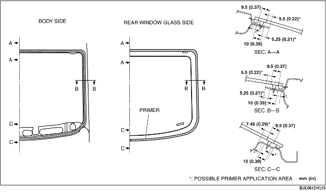
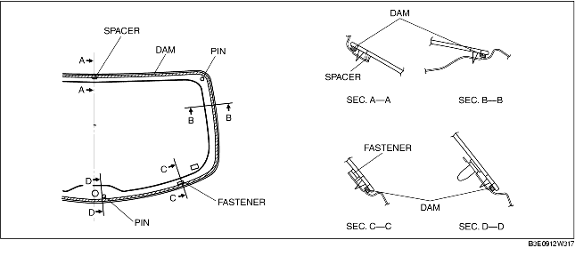
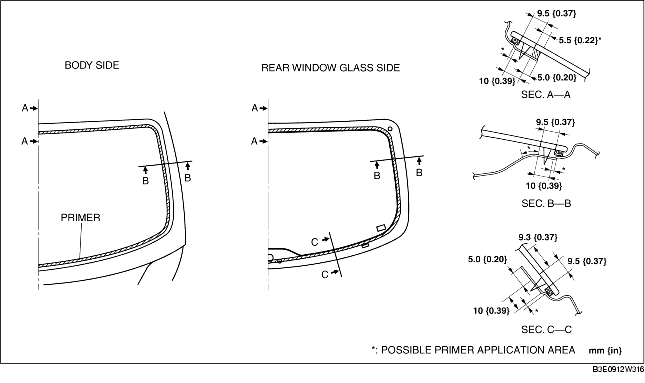

1. Cut away the old sealant using a razor so that a 1-2 mm {0.04-0.07 in} thickness of sealant remains along the perimeter of the frame.
2. If the sealant has come off completely in any one place, apply some primer after degreasing, and allow it to dry for approx. 30 min. Then apply a 2 mm {0.08 in} thickness of sealant.
3. Clean and degrease the perimeter approx. 50 mm {1.97 in} from the glass end and the bonding area on the body.
4. If installing a reused rear window glass, install the rear window glass molding according to the following procedure.
5. Apply glass primer on the rear window glass, and body primer on the rear window glass molding as shown in the figure. Allow it to dry for approx. 30 min.

6. Apply sealant to the glass surface as shown in the figure.
7. Insert the positioning pins into the body, then install the rear window.
8. Press the rear window pins to engage the tabs to the body.
9. Press completely along the perimeter of the glass so that the measurement of the molding lip gap is within the specification.
10. Connect the filament connector.
11. Install the following parts:
12. Allow the sealant to harden completely.
13. Apply soapy water to the rear window glass molding side and blow air from the interior, then verify that there are no bubbles or air leakage.
1. Cut away the old sealant using a razor so that a 1-2 mm {0.04-0.07 in} thickness of sealant remains along the perimeter of the frame.
2. If the sealant has come off completely in any one place, apply some primer after degreasing, and allow it to dry for approx. 30 min. Then apply a 2 mm {0.08 in} thickness of sealant.
3. Clean and degrease the perimeter approx. 50 mm {1.97 in} from the glass end and the bonding area on the body.
4. Install the dam along the perimeter of the glass.

5. Attach the fasteners and spacer to the area shown in the figure.
6. Attach the pins to the seating positions where marked during removal.
7. Apply glass primer on the rear window glass, and body primer on the rear window glass molding as shown in the figure. Allow it to dry for approx. 30 min.

8. Apply sealant to the glass surface as shown in the figure.
9. Insert the positioning pins into the body, then install the rear window.
10. Press the rear window pins to engage the tabs to the body.
11. Press completely along the perimeter of the glass.
12. Connect the filament connector.
13. Install the following parts:
14. Allow the sealant to harden completely.
15. Apply soapy water to the rear window glass molding side and blow air from the interior, then verify that there are no bubbles or air leakage.